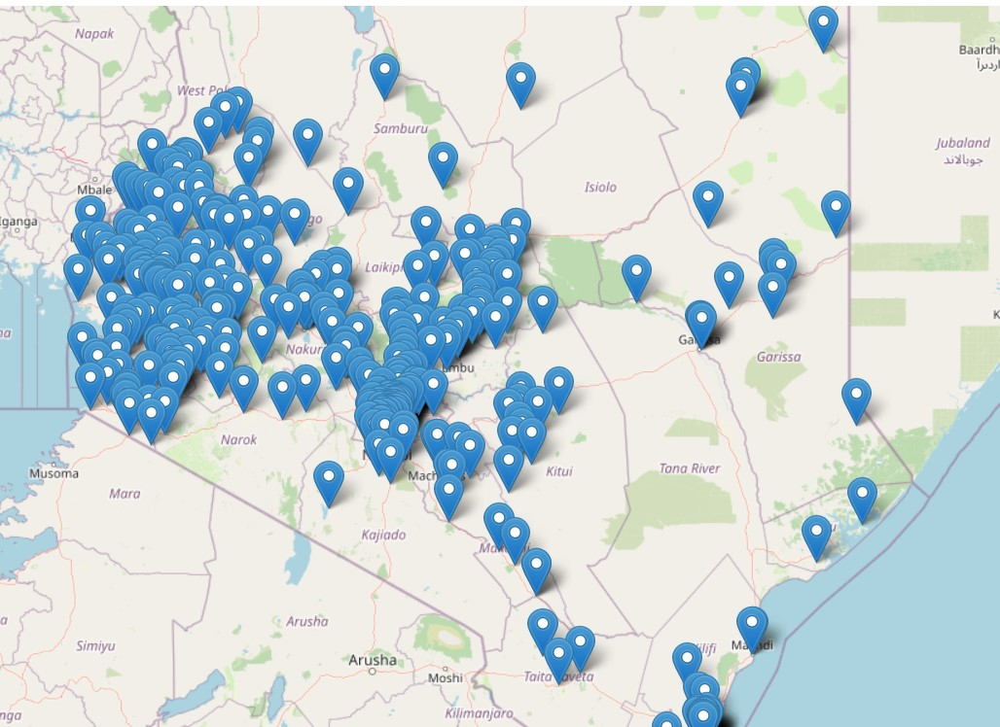
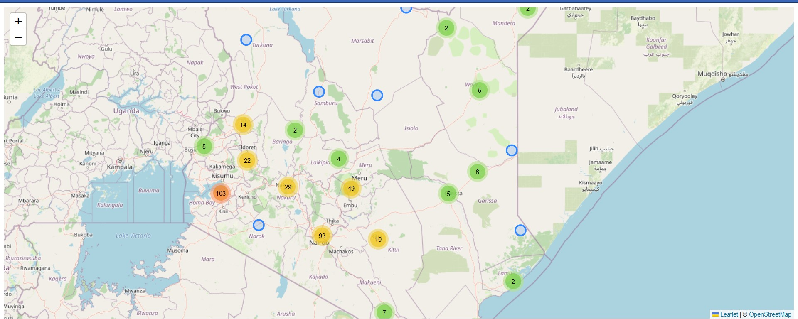
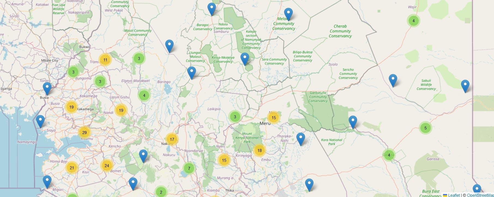
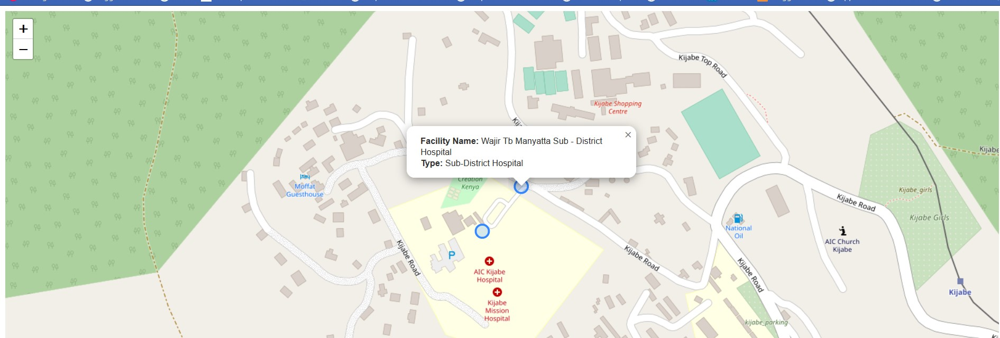
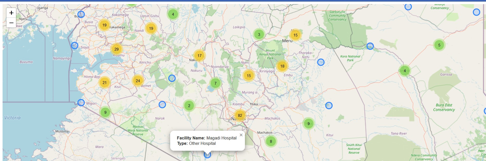
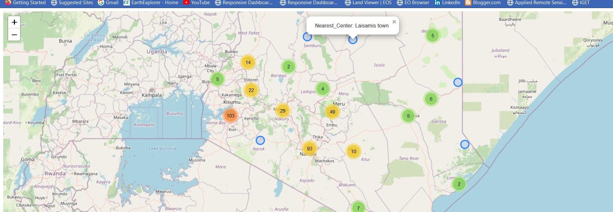

Chapter 10 Cluster to reduce the clutter
10.1 A map full of clutter
There comes a time when it is convenient to coalesce several points into a single multi-cluster point. Consider the following example: you have a GeoJSON file with over 10000 points of houses within a densely populated island of 5km by 5km, if by any chance such a scenario exists. Will you want to display such a gigantic number of points within such a small area? That would be an overkill! Moreover, it will be incomprehensible to the viewer. Consider the following example we set up in a new JavaScript file which we fondly called cluster-markers.js.
var map = L.map('myMap').setView([-1.295287148, 36.81984753], 7);
L.tileLayer('https://tile.openstreetmap.org/{z}/{x}/{y}.png', {
maxZoom: 19,
attribution: '© <a href="http://www.openstreetmap.org/copyright">OpenStreetMap</a>'
}).addTo(map);
url = 'https://raw.githubusercontent.com/sammigachuhi/geojson_files/main/selected_hospitals.json'
L.geoJson.ajax(url).addTo(map);
var markers = L.markerClusterGroup();
The following is the result.
knitr::include_graphics(rep('D:/gachuhi/my-leaflet/images/clutter-points.jpg'))
Not good at all. The Leaflet.markercluster plugin is what transforms a clutter map into one of neatly arranged clustered marker points.
10.2 Preparations
Creating a cluster marker map is fairly easy. You will first have to insert the Leaflet.markerCluster plugin into map.html. The plugin is available from here. Insert the following <script> tag into the <head> element of your map.html.
<script src="Leaflet.markercluster-1.4.1\Leaflet.markercluster-1.4.1\dist\leaflet.markercluster.js"></script>You will also have to insert the Leaflet.markercluster CSS properties via the <link> tag too. Add the following <link> tag for Leaflet.markercluster after the other <link> properties.
<link rel="stylesheet" href="Leaflet.markercluster-master\Leaflet.markercluster-master\dist\MarkerCluster.Default.css"> Don’t underestimate them. These CSS properties are necessary to style your cluster points in a nice way that’s easy on the eye. It is also assumed you have already inserted the name of your JavaScript file, the cluster-marker.js within the script tag enclosed by the <body> element of your map.html file.
If you had done the small exercise at the beginning of the chapter, the following code should be present.
var map = L.map('myMap').setView([-1.295287148, 36.81984753], 7);
L.tileLayer('https://tile.openstreetmap.org/{z}/{x}/{y}.png', {
maxZoom: 19,
attribution: '© <a href="http://www.openstreetmap.org/copyright">OpenStreetMap</a>'
}).addTo(map);
url = 'https://raw.githubusercontent.com/sammigachuhi/geojson_files/main/selected_hospitals.json'
10.3 Behold, a cluster marker map!
Delete the L.geoJson.ajax(url).addTo(map);, we won’t need it now. Our real work of creating a cluster marker map begins with the markerClusterGroup class. Let’s proceed!
var markers = L.markerClusterGroup();
We shall use Ajax again but this time round we shall parse in some functions to customize the appearance and functionalities of our GeoJson markers.
L.geoJson.ajax(url, {
pointToLayer: ((feature, latLng) => {
return markers.addLayer(L.circleMarker(latLng));
}),
onEachFeature: ((feature, layer) => {
layer.bindPopup(`<b>Facility Name:</b> ${feature.properties.Facility_N} <br>
<b>Type:</b> ${feature.properties.Type}`)
})
}).addTo(map);Remember pointToLayer of Leaflet GeoJSON files? It defines how the GeoJson file will appear. The pointToLayer retrieves the Latitude-Longitude coordinates before finally creating circle markers out of them as enabled by ...return markers.addLayer(L.circleMarker(latLng)),
How about for onEachFeature? You can guess. It simply means– On Each Feature, do this and that. In our case we bind a popup of facility name and type which will appear when a circle marker is clicked on.
Actually, the above code sort of finished the work for us.
knitr::include_graphics(rep('D:/gachuhi/my-leaflet/images/cluster-marker-map.jpg'))
Zoom in and out and watch the circle markers spidefy the individual points with a popup. I have restrained from tweaking the markers because the defaults are already good enough. See them from this Github Page.
However, as good practice, we need to add the markers global variable to the map. We do so by using the following code.
map.addLayer(markers)
addLayers, just like the name suggests, adds the given layer to the map.
The L.circleMarker in the pointToLayer key of the Ajax function can be replaced with L.marker(). Below is how some spiderfied hospital markers look like, and they are far from being aesthetically pleasing.
knitr::include_graphics(rep('D:/gachuhi/my-leaflet/images/cluster-marker-plain.jpg'))
Coming back full circle, circle markers are way better.
Most of the Ajax code was inspired by this video.
But wait! Hold your horses, there is a bug. Try to click on any of the spiderfied or lone hospitals and you will notice something that will raise eyebrows. All hospitals display the following popup when clicked:
Facility Name: Wajir Tb Manyatta Sub - District Hospital
Type: Sub-District Hospitalknitr::include_graphics(rep('D:/gachuhi/my-leaflet/images/cluster-marker-bug.jpg'))
Unless a developer would like to be left with an egg on the face for assigning wrong place names, this should be dealt with expeditiously. Our code is alright, since it works in other scenarios such as here. However, it is unnacceptable to assign wrong place names in the world wide web. .
Time to try a different strategy: using fetch API. We have worked with fetch before so I will not explain it that much here. Feel free to google about it as a refresher. Comment out the earlier code beginning from var markers to map.addLayer(markers) and replace it with the following code chunk.
fetch(url)
.then((response) =>{
return response.json()
})
.then((data) => {
var markers = L.markerClusterGroup();
var geojsonGroup = L.geoJSON(data, {
onEachFeature : function(feature, layer){
layer.bindPopup(`<b>Facility Name:</b> ${feature.properties.Facility_N} <br>
<b>Type:</b> ${feature.properties.Type}`);
},
pointToLayer: function (feature, latlng) {
return L.circleMarker(latlng);
}
});
markers.addLayer(geojsonGroup);
map.addLayer(markers);
})
.catch((error) => {
console.log(`This is the error: ${error}`)
})
knitr::include_graphics(rep('D:/gachuhi/my-leaflet/images/cluster-marker-map-fixed.jpg'))
Now all points have their rightful and respective names.
10.4 Additional features of Cluster marker plugin
The official documentation of the plugin lists many other features that come along with the tool. We can’t go through all of them but let’s summise just one important one: the mouseover event. The same way that Leaflet’s markers can have events triggered on them also applies to the Cluster marker plugin. Below is an example but is not part of our exercise.
// We won't use this
markers.on('click', function (a) {
console.log('marker ' + a.layer);
});Let’s demonstrate adding a hover event to our cluster marker map, thanks to this answer.
/////// Added `mouseover` event
fetch(url)
.then((response) =>{
return response.json()
})
.then((data) => {
var markers = L.markerClusterGroup({chunkedLoading: true}); // Splits the add layers to small intervals to prevent page freezing
var geojsonGroup = L.geoJSON(data, {
onEachFeature : function(feature, layer){
layer.bindPopup(`<b>Facility Name:</b> ${feature.properties.Facility_N} <br>
<b>Type:</b> ${feature.properties.Type}`);
},
pointToLayer: function (feature, latlng) {
return L.circleMarker(latlng).on('mouseover', function(){
this.bindPopup(`Nearest_Center: ${feature.properties.Nearest_To}`).openPopup(); // Add mouseover event
});
}
});
markers.addLayer(geojsonGroup);
map.addLayer(markers);
})
.catch((error) => {
console.log(`This is the error: ${error}`)
})
From the above code, we added the mouseover event to each marker point using the on method. The this keyword in this.bindPopup() ties popups of selected variables to coordinates in the var geojsonGroup variable. We also sped the rendering of our Leaflet map by adding chunkedLoading: true parameter to L.markerCluster() function.
Hovering over each marker point will show a value of the Nearest_To attribute which is an actual town centre in closest proximity to the location shown by the marker.
knitr::include_graphics(rep('D:/gachuhi/my-leaflet/images/cluster-marker-mouseover.jpg'))
The code files used for this chapter are available from here.
10.5 Summary
Cluster marker points are a neat way of displaying several points. Upon zooming out, the spatially sparsed points coalesce to a single unit displaying a digit standing for the number of markers it holds. Upon zooming in, the points spiderfy, (think of spreading out) to their appropriate locations. Here are the lessons from this chapter.
Clustering points is at times useful for map neatness. In Leaflet, this is made possible with the
Leaflet.markerclusterplugin.It is possible to customize how the spiderfied marker points will appear. For example, instead of settling for the default styles of individual markers, we used the circle markers to show individual points.
It is also possible to add events to the spiderfied marker points. When clicked the, spiderfied marker points can show a popup, or trigger any other event as specified in its code block. In this chapter, we bound the popups showing the facility’s name, type and nearest centre to our marker points.